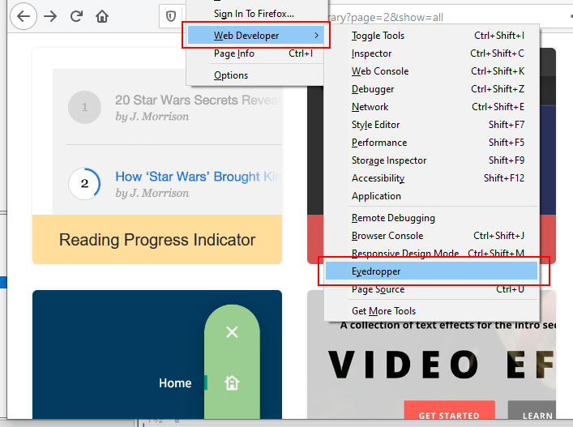

Learning Goals
At the end of this Tutorial you will be able to:
- Understand the three main colour systems used in web design: colour names, RGB values and hex codes.
- Apply the CSS properties of color and background-color to web page elements.
You can view finished versions of the four sample web pages you will work in this Tutorial by clicking the links below. The finished samples will each open in a new tab of your web browser.


About colours in web design
Colours provide web pages with interest and personality. You can see from the examples below how the same image but with different dominant colours affects the impact of a web page.

In deciding which colours to use with your web pages, you may find the list of resources at the end of this Tutorial helpful.
Below is a colour psychology infographic from one of the resources.

Keep in mind that the above chart will not hold true for every individual. However, this information is a good, research-based starting point for deciding your website colour choices.
Choosing your dominant ‘brand’ colour
Your website will have one main or dominant colour that will also be the main colour of your 'brand'.
For Bus Eireann, for example, the main brand colour is red. For Irish Rail, it is green. And for Ryanair, it is blue.

For choosing a modern-looking dominant colour for your website, check out the Flat Colours UI and Bootflat websites.
You can see some striking colour choices on the Experiments section of the Cody House website.
If you are using the Mozilla Firefox web browser, you can quickly 'grab' the hex code of any colour on a displayed web page as follows:
- From the menubar at the top of the browser window, click Tools and then Web Developer.
- From the sub-menu displayed, click the Eyedropper option. 
- With your mouse, hover over any part of the web page to see the relevant hex colour code.

- Next, click on the highlighted area to copy the hex colour code.
You can now paste this code into your CSS stylesheet file.
Creating your colour palette
In addition to your chosen dominant colour, you will typically select one, two or three other colours to create a colour combination or palette of colours that work together harmoniously.
Two good websites for helping you decide on a colour palette are Colour Hunt and Muzli Colours.

Colours: two common CSS properties
The two most commonly used CSS colour-related properties are listed below. Note the US-style spelling in each case.
- color: You use this to set the colour of text elements, such as headings, paragraphs, lists and hyperlinks. By default, web browsers display all text in black.
- background-color: You can use this to set the colour behind selected HTML elements or the background of the entire <body> of a web page. All backgrounds are coloured white by default.
color: /* Insert colour value here */; background-color: /* Insert colour value here */;
In the example below, you can see the text elements <h2> and <p> both have a color of dark blue. They are positioned against a background-color of light pink.

body { background-color: #fef1ef } h2, p { color: #1e266d }
By default, each web page has a white-coloured background. You could change this another light colour by entering the following at the end of global.css.
body { background-color: #f7f7f7 }
Aim for a harmonious combination of text and background colours in the main content area of your web pages. Here are some examples:
- World Diabetes Day: Dark blue headings and text (#003366) with white (#fff) background.
- Victor Kaiwong: Dark green headings and text (#483c0c) with light green (#cfe6ad) background.
- Miguel Lopez: Dark blue headings and text (#142850) with light blue (#dce6ef) background.
Websites with ‘dark themes’ are increasingly popular. Here are a few examples of light text against a dark background:
- Laura Harvey: Dark blue background (#222c3b) with light yellow (#ece4c1) or white text.
- Ahmad Usman: Almost black background (#25262a) with light green (#64f4ac) or white text.
- Indie Hackers: Dark blue background (#0e2439) with light blue (#a2b8cd) or white text.
In web design, there are three common systems for setting colours:
- The colour name system
- The RGB system
- The hex code system
The next three sections of this Tutorial will explain each colour system in detail.
The colour name system
Simply typing a colour name – such ‘red’ or ‘blue’ (without quotes) – in a CSS style rule is a common starting point when designing a new web page.
h1 { color: red }
Many colour names are both easy-to-remember and self-explanatory. For example, ‘yellow’, ‘purple’ and so on. Other colour names are less obvious, such as ‘hotpink’, ‘mediumvioletred’ and ‘lavenderblush’.
Colour names are not case-sensitive. For example, these three versions of the same colour name are all valid.
h3 { color: DarkOrchid } h3 { color: darkorchid } h3 { color: DARKORCHID }
You can see a full list of colour names on this W3 Schools web page.
However, the final version of a web page will typically use either RGB values or hex codes rather colour names for the following two reasons:
- Limited choice: Modern electronic screens can display at least 16 million different colours. With colour names, you are limited to only 147 choices.
- Misleading names: Even when colour names are easy-to-remember, they are not always accurate. For example, DarkGray is actually lighter than Gray.

Note that, in CSS, the colour name of grey can be written in either US spelling (gray) or UK spelling (grey). Either will work correctly.
The RGB colour system
The RGB system is based on the following idea:
Any colour can be created by combining different intensities of the three primary colours: red, green and blue.
Here are a few points about the Red-Green-Blue colour system:
- Every RGB colour is written as a list of three values: first the red value, then the green value, and then the value for blue. The individual values are separated from one another by commas.
- You can write each individual value as a number in the range 0 to 255. The following RGB code will produce the colour red: 255,0,0
- The three values are enclosed within brackets and preceded by the letters rgb (in lower-case or upper-case). In the example of red, the CSS value would look as follows: rgb(255,0,0)
The following examples of CSS style rules show the RGB system used to create the three colours of blue, a light brown and magenta.
h1 { color: rgb(0,0,255) /* blue */ } h2 { color: rgb(255,248,220) /* light brown */ } h3 { color: rgb(255,0,255) /* magenta */ }
The hex code colour system
This is the colour system most widely used in web design. As with the RGB system, the displayed colour is created by combining different intensities of red, green and blue. But the hex (short for hexadecimal) code system is different in four ways:
- The hex colour code begins with the hash (#) symbol.
- No commas are used to separate the red, green and blue values from one another.
- The list of red, green and blue values is not enclosed in brackets.
- The red, green and blue values are each written as a pair of two hexadecimal numbers.
Here are the three colours of blue, light brown and magenta written as hex codes in CSS style rules.
h1 { color: #0000FF /* blue */ } h2 { color: #FFF5DC /* light brown */ } h3 { color: #FF00FF /* magenta */ }
Like colour names, hex codes are not case-sensitive. For example, both #0000ff and #0000FF are valid and display the colour blue.
Decoding the hex colour system
A hex colour code may look like a random jumble of numbers and letters. Given that this system is so widely used in web design, however, it is worth taking a few moments to understand how this colour system works.
Here are the main points to note:
- In the everyday decimal system, there are 10 number symbols: 0, 1, 2, 3, 5, 6, 7, 8 and 9.
In the hexadecimal system, however, there are 16 number symbols: 0, 1, 2, 3, 5, 6, 7, 8, 9, A, B, C, D, E and F.

- The hexadecimal numbers A, B, C, D, and E are equal to the decimal numbers 10, 11, 12, 13, 14 and 15.

- Every hex colour code is really a combination of three number pairs.

- As in the RGB system, the first pair is the red value, the second pair is green and the third is blue.

- The smallest possible value for a pair of two hex numbers is 00. This hex code pair is equivalent to a zero decimal percentage (0%) or the decimal number zero (0).
- The largest possible value for a pair of two hex numbers is FF. This hex code pair is equivalent to one hundred per cent (100%) in decimal or the decimal number of 255.

So, in the hex colour code system:
- The colour white is #ffffff, as all three primary colours are at their maximum intensity: rgb(255,255,255).
- The colour black is #000000, as all three primary colours are set to zero: rgb(0,0,0).
Three-character, short-hand hex codes
Not every hex colour code needs to be written as a string of six digits. You write some hex colours in three-digit shorthand.
Consider the example of the colour white. In CSS, you can write this in two ways:
#ffffff
-or-
#fff
The general rule is as follows:
If any one of the three pairs in a six-digit hex code is a duplicate, you need only write that hex digit once.
You can see some more examples of three-digit hex codes below.

For every colour above, three pairs of duplicate hex digits (such as 00, 33 or FF) are shortened into one digit.
Adding colours to your five sample CSS files
In the Working with HTML Tutorial, you created four sample web pages with these file names:
websites/exercises/page-1.html
websites/exercises/page-2.html
websites/exercises/page-3.html
websites/exercises/page-4.html
Later, in the Working with CSS Tutorial, you linked your sample web pages to these five stylesheet files:
websites/exercises/assets/css/style-1.css
websites/exercises/assets/css/style-2.css
websites/exercises/assets/css/style-3.css
websites/exercises/assets/css/style-4.css
Now you will add colour style rules to the four CSS files, and view the effect on the linked sample web pages.
Updating style-1.css with colours
Follow these steps to add colours to your first sample web page page-1.html by updating its linked style-1.css stylesheet.
Currently, this web page looks as follows:
page-1.html (before colours added).
- In VS Code, open the stylesheet file named style-1.css in your
📁 websites/exercises/assets/css sub-folder. - At the top of the stylesheet, just after the RESETS block, add this new selector and style rule:
body { background-color: lightcyan }
Your stylesheet should now look as shown below.
- To the h1, h2 and h3 style declaration blocks, add this new style rule inside the curly braces:
color: blue;
The location within the curly braces where you enter the color style rule does not matter.
- To the p style declaration block, add this new style rule inside the curly braces:
color: darkslateblue;
- Save the style-1.css file.
Display the page-1.html web page in your web browser.
It should now look like the web page below:
page-1.html (after colours added)
You can close your style-1.css file in VS Code.
Updating style-2.css with colours
Follow these steps to add colours to your second sample web page page-2.html by updating its linked style-2.css stylesheet.
Currently, this web page looks as follows:
page-2.html (before colours added).
- In VS Code, open the named style-2.css in your
📁 websites/exercises/assets/css sub-folder. - At the top of the stylesheet, just after the RESETS block, add this new selector and style rule:
body { background-color: antiquewhite }
- To the h1, h2 and h3 style declaration blocks, add this new style rule inside the curly braces:
color: brown;
- Save the style-2.css file.
Display the page-2.html web page in your web browser.
It should now look like the web page below:
page-2.html (after colours added)
You can close your style-2.css file in VS Code.
Updating style-3.css with colours
Follow these steps to add colours to your third sample web page page-3.html by updating its linked style-3.css stylesheet.
Currently, this web page looks as follows:
page-3.html (before colours added).
- In VS Code, open the stylesheet file named style-3.css in your
📁 websites/exercises/assets/css sub-folder. - At the top of the stylesheet, just after the RESETS block, add this new selector and style rule:
body { background-color: purple }
- To the h1, h2 and p style declaration blocks, add this new style rule inside the curly braces:
color: white;
- Finally, at the end of the stylesheet file, add the following to change the colour of the hyperlink:
a { color: white }
- Save the style-3.css file.
Display the page-3.html web page in your web browser.
It should now look like the web page below:
page-3.html (after colours added)
You can close your style-3.css file in VS Code.
Updating style-4.css with colours
Follow these steps to add colours to your fourth sample web page page-4.html by updating its linked style-4.css stylesheet.
Currently, this web page looks as follows:
page-4.html (before colours added).
- In VS Code, open the stylesheet file named style-4.css in your
📁 websites/exercises/assets/css sub-folder. - To the body style declaration block, add this new style rule inside the curly braces:
background-color: #1f364d

- To the h1 style declaration block, add this new style rule inside the curly braces:
color: white;
- To the h2 style declaration block, add this new style rule inside the curly braces:
color: deeppink;
- To the h3 style declaration block, add this new style rule inside the curly braces:
color: lightgreen;
- To the p style declaration block, add this new style rule inside the curly braces:
color: #81b8cd;
- Finally, at the end of the stylesheet file, add the following to change the colour of the hyperlink:
a { color: white }
- Save the style-4.css file.
Display the page-4.html web page in your web browser.
It should now look like the web below:
page-4.html (after colours added)
You can close your style-4.css file in VS Code.
Colour contrast and accessibility
Some colour combinations that are easy for most people to read are difficult or impossible for others. It is estimated that about 20% of web users have some form of limited vision.
In particular, about 1 in 12 men and 1 in 200 women have some form of 'colour blindness'. That means about 5% of your website visitors will not experience your site the way you intended.
There is little point in creating great text content for your website if a significant percentage of your website visitors struggle or cannot read what is on their screens.
An important factor is colour contrast – the difference between the foreground and background colours.
The WebAIM guidelines recommend a minimum contrast ratio of 4.5:1 for text on web pages. For headings and other large text, a contrast ratio of 3:1 is sufficient.
Notice the difference in the contrast ratios shown below. The image is from Google's web.dev website.

After you have chosen a colour palette, you are now ready to apply it to the website template.
Uploading your files to GitHub
After finishing your web pages and stylesheets, you are now ready to upload them to your account on GitHub.
- Open a new tab in your web browser and go to GitHub.com. If you are not already signed in to your GitHub account, sign in now.

- On your GitHub home page, click the ‘repo’ that holds your web pages. Its name will look as follows, where username is your chosen username on GitHub.
username.github.io

- On the next GitHub screen displayed, near the right of the screen, you can see a button named Add file. Click on it.

- From the dropdown list displayed, choose the option Upload files.

- In File Explorer (Windows 10) or Finder (Apple Mac), drag-and-drop your 📁 exercises sub-folder to upload it to your repository on GitHub.

- Scroll down to the bottom of the GitHub screen, and accept or edit the short message (Add files via upload) in the Commit changes box.
- Finally, click the green Commit changes button to upload your files.

Your updated four sample web pages with text and background colours are now published on GitHub at web addresses similar to the following:
https://username.github.io/exercises/page-1.html
https://username.github.io/exercises/page-2.html
https://username.github.io/exercises/page-3.html
https://username.github.io/exercises/page-4.html
It may take a few minutes for your uploaded files to appear on GitHub.
Further resources
Colour psychology 101: How colour affects perception of your website
By Safa Khudeira at the Intechnic Blog
How to use the psychology of colour to increase website conversions
By Neil Patel at the Neil Patel Blog
Understanding colour psychology for impactful web design
By Jerry Cao at DesignModo
The psychology of colour in web design
By Jenni McKinnon at the Envato Blog
Chapter 4: Color
From The Magic of CSS by Adam Schwartz
Color Hunt
A platform for colour inspiration with user-contributed colour combinations.
Muzli Colors
A colour palette/schemes generator.